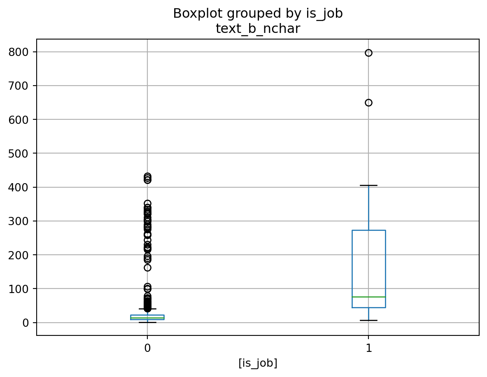

Link Classification for Job Post Scraping
Introduction
This notebook briefly evaluates potential features for classifying links as “going to a job posting” and proposes and evaluates a simple decision rule. For ground truth a random sample of 1,833 unique link texts were hand labeled, 42% found to be to job postings.
Link Text Length
The simplest feature turns out to be length of post, as long link texts typically meant many job details crammed into a single clickable chunk.
Zero Shot Text Classification
Next I applied a zero shot text classifier using categories that represented both desired concepts as well as many representating negative cases seen in the data. Many of the categories do a good job either partially or completely seperating the links by the hand labeled ground truth.
| is_job | 0 | 1 |
|---|---|---|
| text_b_class_mnli | ||
| job title | 0.10 | 0.90 |
| job detail | 0.54 | 0.46 |
| number | 0.73 | 0.27 |
| career | 0.76 | 0.24 |
| industry | 0.90 | 0.10 |
| company | 0.97 | 0.03 |
| webpage | 0.97 | 0.03 |
| job website | 1.00 | 0.00 |
| link on a job website | 1.00 | 0.00 |
| symbols | 1.00 | 0.00 |
| url | 1.00 | 0.00 |
| website navigation | 1.00 | 0.00 |
Simple Decision Rule Classifier
As a first approximation, I built a simple decision rule based on two criteria -Positive label if categorized exactly as a desired label (“job title”, “job detail”) or very long (>120 characters). -Negative label is categorized exactly as an undesired label (‘company’,‘webpage’,‘job website’,‘link on a job website’,‘symbols’,‘url’,‘website navigation’) or very short (<35 characters)
This simple rule achieved 91% accuracy immediately. Importantly it achieved very high sensitivity 96%, not missing many true jobs.
| is_job | 0 | 1 |
|---|---|---|
| y_hat | ||
| True | 0.04 | 0.96 |
| False | 0.88 | 0.12 |